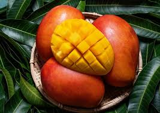
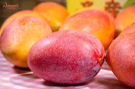

愛文芒果
愛文芒果種植
愛文芒果產地主要分佈在台南市與屏東縣，愛文芒果屬於熱帶果樹，需在溫暖的地方種植，適合種植的溫度落在25度~30度。
芒果的根群分佈很深很廣所以對於土壤的要求不高，只要排水良好，若是山坡地的果園則要選擇向陽坡的因日照較充足。芒果是屬無蜜源的花朵，授粉不是依靠蜜蜂，而是依靠蒼蠅，所以芒果開花期前，建議在芒果樹下堆有機肥料飼養蒼蠅好讓果樹可以授粉。

愛文芒果產季
顏色色澤鮮艷紅通通的，果型外表飽滿，聞起來有熱帶水果獨有的香甜香氣，散發出濃郁的果香味，口感吃起來果肉細嫩，香甜多汁，因為甜度高所以雖帶點微酸還是很順口甜而不膩，夏季配上冰一起吃最消暑了。

愛文芒果價格
每年的價格多多少少都會不一樣，原因有很多例如:芒果當年結的果實狀況，氣候影響像是颱風或是暴雨、乾旱，疫情影響，國際情勢等等…..都會造成價格的影響。
另外平常在購買時也會因為顆數多寡，芒果大小，甜度，色澤種種因素所販賣的價格也都不盡相同。
資料來源: